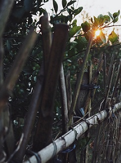

THE MEMORY OF CHILDHOOD
收
拾个好心情，绽放出淡淡微笑，沿着小路一直向里走去，久不归家的我没有任何理由不好好亲昵一下这片土地和这里的人们。亲切地向每一个我见到的街坊邻居问好，他们自然也报以灿烂的笑脸，我感到温暖的同时，却也看到了笑容之中又多了的岁月痕迹。那些爷爷辈的老人家们，见到我总不免一句“哎呀，这孩子都这么高了，想你小时候那会儿……”老人家们从来都记得我儿时的模样，可是老人家们在我心中的面容却随着岁月日益苍老。我极力地记住这时的一张张面孔，因为我知道，在未来的某一天他们也会随着风飘进记忆里。

人总归是要长大的。不管是孩童，成人，还是老者，亦或是心境，都无法避免；而长不大的，大抵唯有那一阵风了；可是，积久的风也可变成一种风气，一种风俗。
对于孩子们，特别是农村的孩子们来讲，过年从来都代表着美好。在这段时间里，孩子们可以有好多好吃的，好喝的，最重要的是，可以三五一伙尽情地在村里村外耍闹，没有作业的负担，没有大人唠叨的担忧。看到他们跑闹的身影，听到他们快乐的笑声，我心生向往，便没有丝毫不好意思地加入其中，跳房子，捉迷藏，打沙包，一切记忆里的游戏都肆意地玩个遍，那一刻我真的忘记了年龄，回到了童年。直到那阵风起吹凉了额头的汗，惊醒了久不运动后觉酸痛的腰腿，才把我拉回了现实，不禁唏嘘，同是这一阵风，却在我不觉之中将我吹过了童年，将眼前的欢声笑语吹进了回忆。
有些幸福只是在将到未到之时最是令人心动，一旦真的来到了，却又那般匆匆而平淡，不似想象中那样澎湃。正如现在，那一阵风还没吹散爆竹的烟尘，百般期盼的年就已经过完了。越来越多的人们抱怨这年是越来越没有滋味了，再也寻不回记忆里的让人回味的年的影子了，每个人记忆里都有一个与众不同的年；但相同的是，这些回忆都随着那一阵风渐行渐远，而自己也在这风中逐渐沧桑老去。